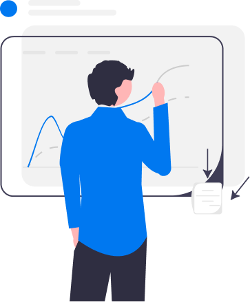
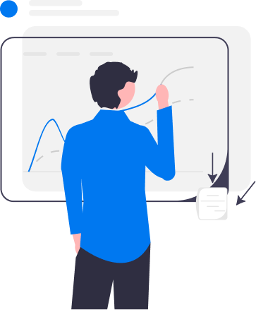

Oi,
Eu sou Adryan
Web Designer
Oi,
Eu sou Adryan
Web Designer


Sou Adryan Daniel, um desenvolvedor Front-End brasileiro com 3 anos de experiência. Minha paixão pelo desenvolvimento web começou em 2014, e desde então tenho me empenhado ao máximo para seguir esse caminho, enquanto me divirto com os diversos projetos desenvolvidos. Através da minha experiência adquirida ao longo desses projetos, sou capaz de compreender melhor as expectativas dos clientes e responder com precisão às suas necessidades, de acordo com o ramo de atividade